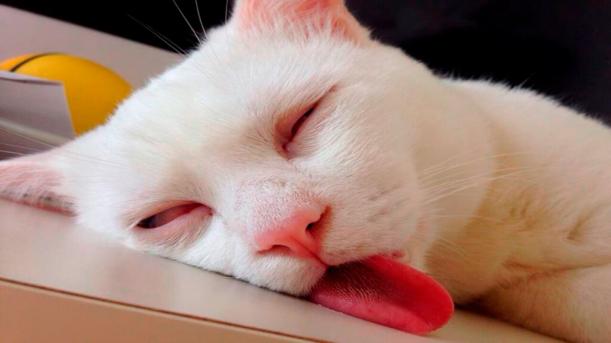

Johny
Watching...
Cats don't like change without their consent. Cats can be cooperative when something feels good, which, to a cat, is the way everything is supposed to feel as much of the time as possible. The cat is a creature of most refined and subtle perceptions naturally.
Thinking...
There are people who reshape the world by force or argument, but the cat just lies there, dozing; and the world quietly reshapes itself to suit his comfort and convenience.
Resting...
The thing about cats, As you may find, Is that no one knows What they have in mind.
Sleeping..
Cats have always been associated with the Moon. Like the Moon, they come to life at night, escaping from humanity and wandering over housetops with their eyes beaming out through the darkness.
CUTE

The cat is a domestic species of small carnivorous mammal. It is the only domesticated species in the family Felidae and is often referred to as the domestic cat to distinguish it from the wild members of the family.
Cats or domestic cats are carnivores that are valued for their ability to hunt and adapt to domestic pests such as rodents, snakes and scorpions. Cats became associated with humans at least 9,500 years ago. Skilled carnivorous cats catch and feed about 1,000 species of animals. Simple commands can be trained.